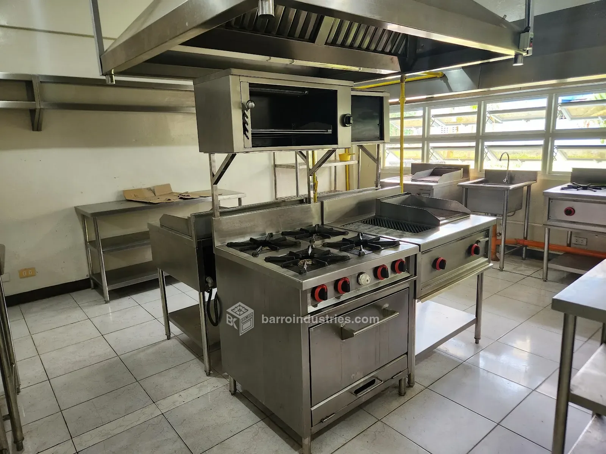

01
Commercial & commissary kitchen fit-outs
Design-build from concept to completion: cooking lines, preparation and washing stations, baking equipment, exhaust hoods and ducting, fresh-air systems, gas lines and fire suppression. One contractor, from drawings to commissioning.
Fit-out servicesStart a project brief
Also: exhaust and fresh-air systems, LPG gas line installation and kitchen fire suppression.